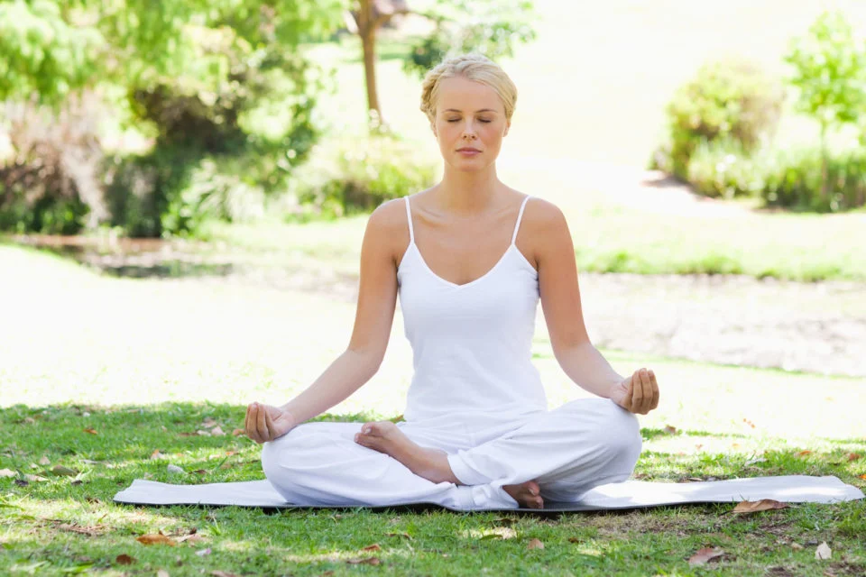

A meditação de Gratidão e Positividade é uma prática
poderosa que ajuda a mudar o foco mental para aspectos positivos
da vida, promovendo emoções de alegria, contentamento e conexão.
É ideal para momentos em que você precisa fortalecer o bem-estar
emocional e mental. Aqui está o que você pode esperar dessa prática:
Benefícios
Melhora do Humor: Cultivar gratidão reduz pensamentos negativos e eleva a sensação de felicidade.
Fortalecimento de Relações: Focar em aspectos positivos nas pessoas à sua volta aumenta a empatia
e melhora conexões sociais.
Redução do Estresse: Concentração no que você valoriza diminui a ansiedade e promove calma.
Maior Resiliência: Desenvolver uma mentalidade positiva ajuda a lidar melhor com desafios.
Como Funciona a Prática
1. Preparação do Ambiente
Escolha um lugar tranquilo, com pouca distração.
Use uma luz suave ou velas, se preferir, e música relaxante ao fundo.
2. Etapas da Meditação
Respiração Inicial
Feche os olhos e respire profundamente por alguns minutos, concentrando-se na sensação do ar entrando e
saindo.

Foco na Gratidão
Traga à mente 3 coisas pelas quais você se sente grato.
Pode ser algo simples como o som da chuva, um momento especial ou uma qualidade sua.
Sinta a gratidão profundamente enquanto visualiza esses momentos ou objetos.
Afirmações Positivas
Repita frases como:
"Eu sou grato pelo que tenho e pelo que está por vir."
"A cada dia, atraio mais alegria e positividade."
Enraizamento
Imagine uma luz dourada envolvendo você, simbolizando todas as energias positivas que você está cultivando.
Encerramento
Respire profundamente algumas vezes, movimente os dedos das mãos e dos pés, e abra os olhos lentamente.